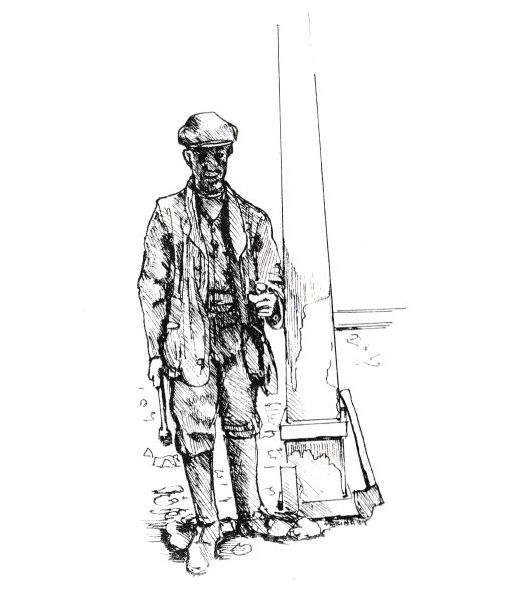

THE GOUGH FAMILY
The Gough family go back through the parish history for hundreds of years. As a boy of 12 years of age when my brother Jesse, aged 15 was drowned in the Deep Lock, Somerton, near Chisnell Farm we farmed as tenants of the Goughs.
I was at school at Souldern and I was asked to go and see Mrs. Gough a widow lady of a great age she seemed, as she sat in her drawing room dressed in black and almost blind. She was around 90 years old. She was a very sweet and sympathetic over the loss of my brother. She told me she had not only lost her husband but also her only child at a very early age of 6 years old with scarlet fever. It was so hard to lose a son and she knew how my parents were feeling at the time.
As a boy I looked with interest at this lonely mother in her large room with curtains partly drawn to keep some sun out and noise, so quiet, so subdued, withdrawn – in my thoughts I can see this scene. I was so brown and tanned by the sun working in the fields haymaking – it was July that the tragedy occurred. I was very emotionally upset, nothing so drastic had happened to me since losing Granny Callow some 7 years before. I remember a feeling of great emotional compassion for this gentle grandmother person with no one to love, as I stood there and a bond of feeling surged through me as I took her hand and knelt by her side with tears in my eyes and a sob in my throat. We held fast for a few moments as my brother’s loss overwhelmed me.
In her sorrow at my distress she talked and calmed me, as no doubt she had her own son, and after a few seconds I regained my composure. We talked of the hay and the wet summer and she led me on in conversation to talk of everyday things school, Souldern etc. and when I was recovered we parted with a promise to meet again in the near future. I pressed a kiss on her cheek as I left her sitting with a half smile on her lips and what thoughts of me my brother or her family, who knows? I wished that little moment had meant something to her in her loneliness. How thoughts stray as I walk the village street like thistledown, they touch my thoughts.
One autumn day I rode my pony “Billy” galloping down the street and up the yard entrance to Boddington’s the Bakers, pig butchers, farmers, dairymen and taxi. They were one of the five owners of motorcars in the village – the others being one at the court, one at the manor, one at Manor Farm, and a lorry at Bates, Carrier, and Coal Merchants.
Getting back to Boddingtons Taxi: the bus for Oxford did not come through Souldern. We had to meet it at Fritwell, so women with small children and the infirm would hire the taxi.
One very bad foggy night a woman was returning from Fritwell with a small child and some shopping when the taxi left the road. Syd stopped and shouted,
“Get out and find me the road I lost it,” so the mother clutching the child got out and with a lot of this way back; now this way forward she got Syd back on the road heading for Souldern.
Without so much as “how’s your father” Syd kept going: now he was right he didn’t stop to pick up his fare, no matter how she yelled and ran with child, she was left to walk home, a matter of a mile and a half, in the dark and fog. As she said, he was alright as he always collected the fare before he started the journey.
On another time the Boddingtons had gathered their walnuts, the double ones. We boys had never had much luck scrumping them because they were guarded so well. But as I rode around to the bakehouse on Billy, the nuts, those big double juicy milky ones, lay hundreds of them on sacks. My mouth waters, now today, at the thought of them. ‘How?’ I thought. ‘How I wish .... (as only a young boy could) ... ‘If only some way?’ But how?
Out of the blue one of the workmen doing some repairs came by, taking in the situation very he quickly bent down and grabbed four large nuts in his hands and just threw them at me. Billy half reared and turned as I grabbed at the nuts. Two I caught. Into my pocket in a flash and slipping my arm through the ponies reins I jack-knifed off Billy, hit the ground, retrieved the other 2 nuts, concealed them in my shirt and back on the pony in 2 shakes of a dog’s tail. The workman’s pleasure at my acrobatics was rewarding enough for him. As for me, I was the envy of my pals for weeks. How many times we had searched under that walnut tree and not had one nut between a gang of us, a dozen or more, and there was me – four thrown at me. I was a lucky so-and-so!
To turn the pond corner and walk on up to the school. The clock is not going for the simple reason that from inside the clock, with the works and everything, was taken away by the builder who converted the school into a private dwelling – leaving only the clock face and the hands, to this day.
How many times and how many balls had been thrown at those hands in playtime, afternoon break, etc so that we could go home early? On wet days the clockface was smothered in wed muddy ball marks. The glass in the window to the left and below. I had 3 hours off school for that.
During playtime one day I broke it somehow. When we assembled in the playground to march in some little pet reported me to Sir.
“Well you can go and find Art,” (the village handyman) I was told. So off I go. Look in the most opposite direction because who wanted to sit in class 5 and 6 to a form on a nice summer’s day? Freedom was a thing to enjoy and extend as far and as long as possible. So trying to think up a plan, I strolled casually up the street almost to the village pump, when out of the house on the other side of the street, the one before The Olde Forge, steps the Moffey Man.
With an exaggerated wave of his arm and a nod, and a dancing step. He was good at that sort of tethering one one foot in mid-step. He was a cough-drop and good for a laugh.
“Where you going? Come in for a minute.” Not needing much persuading I told him that I was looking for Handy Art. Like me Moffey thought I should not hurry things so in I went and here is an account of the hour or so I spent with Moffey known as the village man with a double brain: One went one way and the other went off at some queer angle.
“Come in my boy,” said Moffey, laughing with tears in his eyes. He was good at that too.
“See what they’ve left me, she and them between them... This is it, what you think of it ay?” stopping to light a Player cigarette, squinting to see the print was on the other end: “You get poisoned by that print,” he’d told us that dozen of times.
Moffey and his why’s and wherefores – you had to be like a thrashing machine and sift things out. Like now I didn’t know who they were or she, so I had to bring him back sort of like to the start. For he had been away, somewhere, no one had seen him for weeks.
“I haven’t seen you for a few weeks about the village, been on your holidays or somewhere?”
“In the cookshop with a muzzle on,” said Moffey, tears of glee rolling down his cheeks. (Prison) I knew that one Artful Joe and Moffey had told me years ago.
‘What? and Why?’ I wondered, but you had to leave Moffey to spin the tale.
He told me about his wife who had a rare old time with him and his sayings, threats and curses. This was the time he had threatened her. Around the cottage he took me, like a racehorse – reeling off this and that as fast as you could read, all by memory.
I had been out over an hour, at 2.30 was playtime at school. Off I trotted to Sir,
“Can’t find Art, Sir.”
“After break go back and look for him.” So after school break off I went to find the man. I mooched slowly along the Foxside through the Tchure to Art’s workshop and what do you think? He was there. I explained about the window had a chat,
“What’s the time?” I asked.
“3.15,” says Art.
‘Good,’ thought I. ‘Gently does it.’ So back I went at a snail’s gallop to school. Five minutes to prayers and the end of another school day.
The Post Office was kept by Mrs Matthews. Her husband, Bill, was the retired village postman, all knit up with swellings, screws and whatnot: A reward for the wet journeys to the railway station to collect and deliver mail on foot across fields, ploughed or knee-deep in grass, wading knee-deep through water, snow and most always mud.
Bill was a friendly man not so his Mrs. At least, we children got the raw side of her sharp tongue. Not many children liked her. She was a very clean and efficient person. Everything was clean and tidy inside the Post Office, outside was a well scrubbed step with a mat on right alongside the main High Street path. This she guarded jealously. No-one dare step on it as they passed by only if you were a Post Office customer.
So for kicks one day I said to my schoolmates (Ron known as Smiler as he was always smiling but later as “Sunny”. (Moffey gave him a new nickname – more later):
“Let’s step on ole Amy’s step as we run down the street to school.” With me leading away we ran hopping onto her step. As I passed then Smiler, I was 0.K. but Sunny – bang, he caught it with her broom, straight in his face. Stopped, dead in his tracks, and turned the waterworks on. Now Sunny was the one boy that did all her errands – fetched milk, went to the shop, took messages or whatever and she was a bit put out when she saw who she had clobbered.
“Sorry Son. It was John I meant to hit not you.” Sunny yelled louder. “Don’t cry, I’ll give you something. Wait a min.” We, his pals, waited further down street. Two minutes a smiling Sunny came down to us, a bag of sweets,
“You two can have three each. I was hit and I had to cry, thanks!” Now we boys were always thinking up tricks to get sweets, for us there was no pocket money – only wages that you worked for. Only to be told at the end of the week, we had done something wrong or not done something so no wages. Our parents were good at this. Made us lose our money. Moffey was picked to fill the pocket one time, Sunny was helping him and said could I have a few bits of wood to light our mums fire.
“Yes,” said Moffey, “sure you can.” Sunny took the few sticks of wood and sold them for ½ d not taking it home! Next day Moffey called,
“Come in, come in. You artful young Sunny Jim. You Reuben the screw bin, the sly little Reuben, ha’penny bundle of wood seller.”
In the village in the winter nights we children had very little to do. Some nights several of us 10 to 12 year olds would go and visit Moffey in his cottage (Now Half Penny Cottage). Why Half Penny cottage? When clearing the cottage after a tenant, I found 15 or 20 old ha’pennies scattered around. Not liking Numbers, I named it ½ penny cottage. This was long after Moffey had moved on and I came to own the house.
As I was saying, we kids would visit the Moffey to pass a couple of hours. As you have read to we children, he was a grand entertainer. I have never heard a person with so many sayings. “You included yourself, if the cap fits, you wear it,” he would answer, if you said “Do you mean me,” over a matter of word given “My words my bond” or talking of the truth “lies.” “You can lock up against a thief and rogue, but you can’t a liar.”
Some nights he would be a bit silent and moody. One thing would always arouse him and we boys, like all boys, loved to rouse him and as we whispered to one another:
“That’ll get him going!”
“Who shot the pig because it wouldn’t go to sleep on the perch with the hens.”
“I never did,” Moffey would say, as we kids started tittering. “It was like this...."
